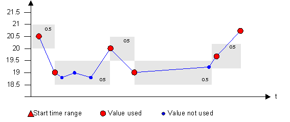
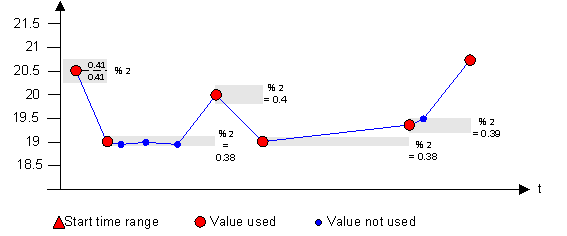
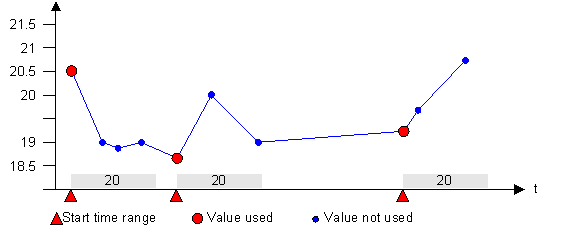
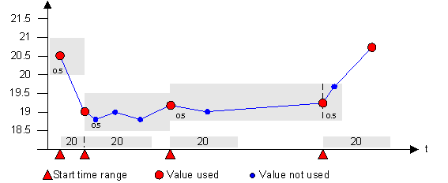
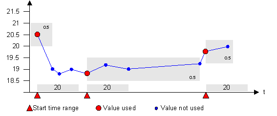
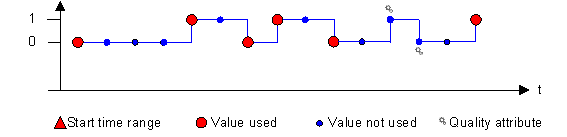
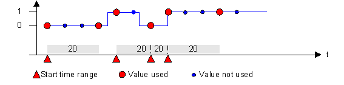
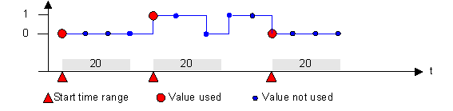

Value Smoothing
Smoothing is used to reduce the data traffic between a device driver and the process image that is retained in the system. It is mainly used to optimize systems where data is acquired via polling, for example, Modbus integrations. Not all smoothing algorithms are available for all data types.
Supported Data Types | ||
Smoothing Mode | Float, Integer, Unsigned | Bool |
Value dependent | X |
|
Time dependent | X | X |
Value AND time dependent | X |
|
Value OR time dependent | X |
|
Old/new comparison | X | X |
Old/new comparison AND time dependent | X | X |
Old/new comparison OR time dependent | X | X |
Value-dependent
Absolute: If the original value changes more than the set absolute value (unit), the value is not smoothed and is set as original value.
Example
For a temperature sensor, the last logged value was 20.5 degrees Celsius. If you set an absolute deadband of 0.5 degrees, a value will be logged if the reading is 21.1 C or 19.9 C.

Relative: If the original value changes more than the set relative value (%), the value is not smoothed and is set as original value.
Example
If you set a relative deadband of 2%, a value will be logged if the reading is 20.92 C or 20.08 C.

Time-dependent
Messages during a variable period after the last message are discarded.
Example
A temperature sensor reads every 500ms. In order to reduce data volume you only want two readings per minute to be logged. You enter an interval of 20 seconds.

Value AND time-dependent smoothing
Values within the set tolerance time AND within the set tolerance range are smoothed. After the time has elapsed or when the set value (limit) is exceeded within the tolerance time, the value is not smoothed and the value is saved as an original value.
Example
Readings are only logged either in intervals (for example, every 20 seconds) or when the value is outside the deadband 0.5 K.

Value OR time-dependent smoothing
Values within the set tolerance time OR within the set tolerance range after the set time has elapsed are smoothed. After the time has elapsed and when the set value (limit) is exceeded, the value is not smoothed and the value is saved as an original value.
Example
Readings are only logged in intervals (for example, every 20 seconds) and only when the value is outside the deadband of 0.5 K.

Old/new comparison
Messages are created only if the value itself changes. If only the status (quality and time stamp) of a value is changed, the value is not archived.
Example
This smoothing type should be used for digital values, such as a light switch. A reading (such as OFF) is only logged when it is different from the last logged value (such as, ON).

Old/new AND time-dependent
All variable values that occur within a tolerance time and remain unchanged, are suppressed.
This means that after a value change, unchanged values are not sent to the system during the given tolerance time. If the value changes, the new value is sent to the system. The old/new comparison is restricted to the tolerance time of the time dependent smoothing. After the end of the tolerance time range a new value is sent in any case, even if the value or the status is identical to the former value.
Example
This smoothing type should be used for digital values, such as a light switch. Values are only logged in intervals (for example, every 20 seconds) as well as when a reading (such as OFF) is different from the last logged value (such as, ON).

Old/new OR time-dependent
Value or status changes are suppressed within the tolerance time (due to the time dependency). After the end of the tolerance time, only the old/new comparison is valid. The later value changes are only sent if the original value changes (because of the old/new comparison). Thus, either the time dependent smoothing OR the old/new comparison is valid.
Example
This smoothing type should be used for digital values, such as a light switch. Values are only logged in intervals (for example, every 20 seconds) as well as when a reading (such as OFF) is different from the last logged value (such as, ON).


Value smoothing is not recommended for BACnet integrations because the BACnet driver has an integrated smoothing function.